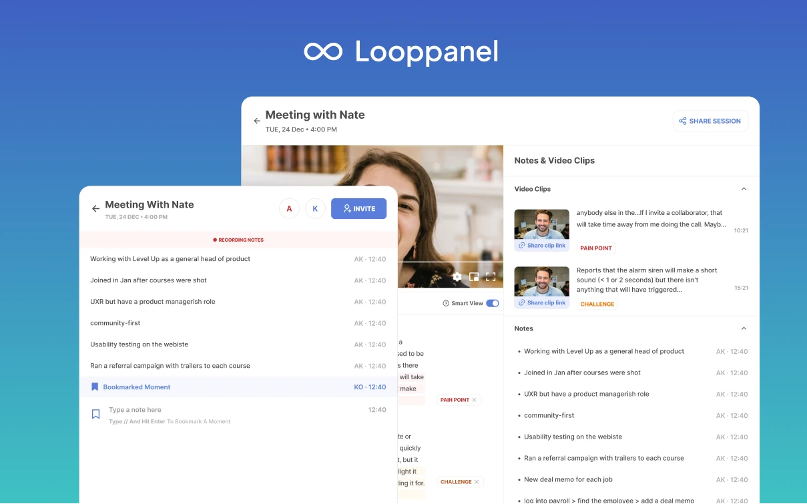

Improving note-taking experience for user research calls on Zoom
with Looppanel
DESIGN, RESEARCH, USABILITY TESTING

Taking notes during a user research call is painful. After speaking with our users, we discovered everyone does it differently. But all methods require them to return to the call recording to process the data and highlight key moments.
We designed a live note-taker and a call recorder for Zoom to eliminate the need to return to the recording to take notes. Users can use the recorder to take live notes linked to the transcript while focusing on the
interview.
Context
During our conversations with researchers, designers, marketers, and company CXOs we realized they took unstructured and structured notes. But all of them faced challenges while matching/collating the notes with interview transcript.
Part -I : Unstructured Note taking
- Researchers usually complain about the research process taking too long.
- Revisiting an interview after it's done is one of the most painful parts of the process.
- It's similar to conducting the interview again, but with the additional effort of tagging and attaching notes to the transcript taken during the conversation.
Prototype testing our hypotheses
We designed and usability tested a prototype that the users could interact with while we conducted a mock interview (interviewception).
Giving them a prototype to interact with gave us insights into the actions they can and can't perform during an interview. We made the prototype on Protopie to make it work like the dev version to get accurate usability data.
Final Designs
Based on the findings, we made design changes to make it more useful during a call.
- Removed the emojis as they could not be interacted with during the call, and added a bookmark feature
which could be accessed using the// shortcut. This also reduces the number of decisions a person makes
during the call
- People didn't expect the note-taking space to look like a chat, so we changed it into a more open
space that makes the experience similar to a document.
What we learned
- We assumed people would engage with the emojis the most, but those were the least used during a call. This pointed towards the fact that they wanted the note-taking doc to be in the backend, not front-end,
during a call.
- Familiarity with the interface was the most important factor in getting a hang of the screen. This pointed towards the fact that when people wanted an experience to a Google or Notion doc.
To add structure to user calls, we ran another experiment in which we introduced a Question Script to the live notetaking experience.
Part -II : Structured Note taking
We observed researchers were using a template to take notes during research calls. This helped them structure
the notes and make sense of it with the transcript later on. But, there were a few problems with this
approach
- There was no way to make sense of data according to the note taking template
- It was still difficult to get answers for questions or organize data in sections
Below are some examples of the templates used
Usability Testing
We iterated on top of previous designs and added sections to the note-taking view and tested with the users. Since an interactive design was not possible, we used notion toggle lists to test the concept before
creating a working prototype in Protopie. Our assumptions before testing were
- There was no way to make sense of data according to the note taking template
- It was still difficult to get answers for questions or organize data in sections
Based on these assumptions we iterated a few designs.
Final Design
Based on usability testing, we decided to remove the navigation from the question script as users didn't face
issues with traversing the script. Since they moved progressively between questions, there was no need for a
persistent list.
What I learned
- Users liked the idea of unstructured notes since it gave a way to take notes that didn't fit in any
question
- Users needed simple ways to capture their thoughts without having to remember a lot of shortcuts
Details on more experiments soon. 😎
Related Projects